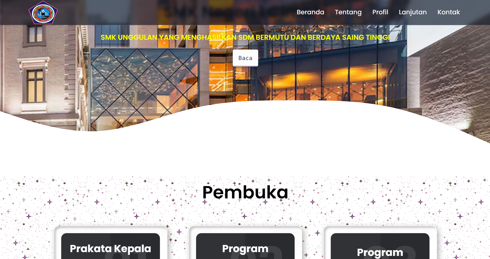
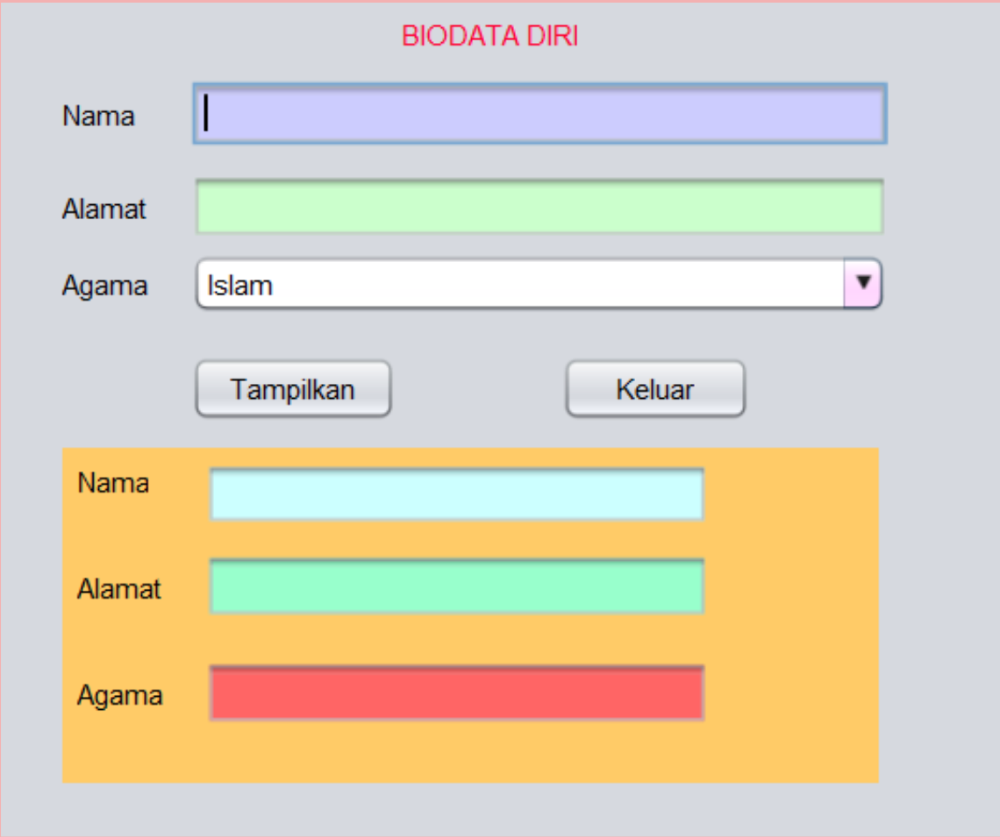
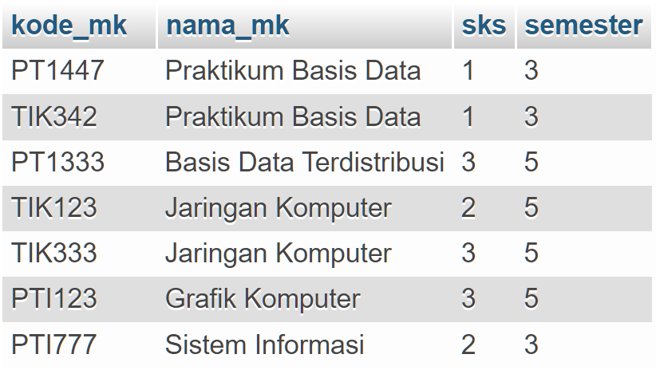
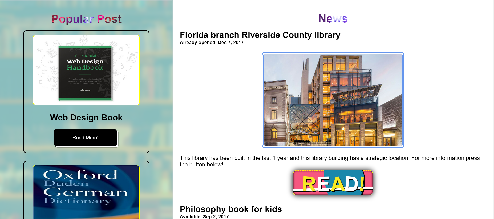
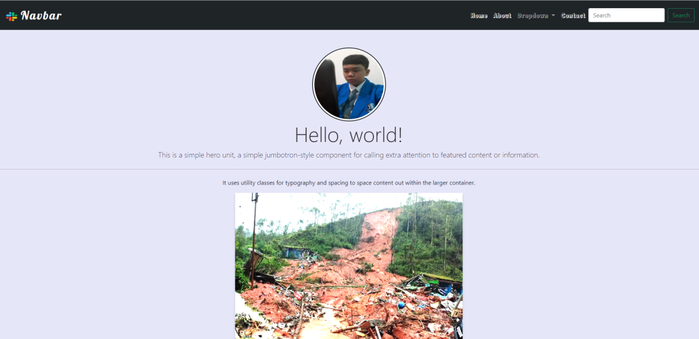
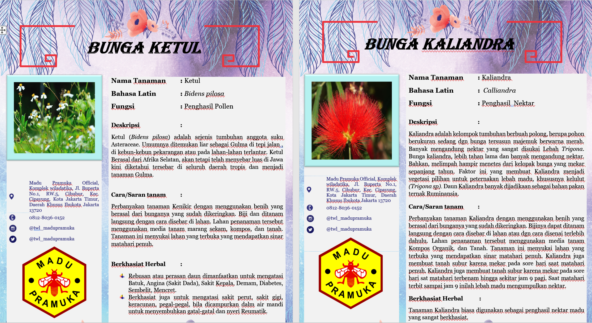
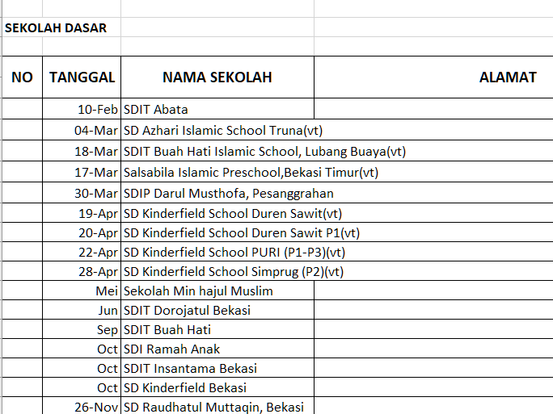

1. I once made a Localhost school website.
2. I once made a personal biodata form using java.
3. I once created a storage in the database via PHPMyAdmin.
4. I once made a Library website.
5. I once made a portofolio website.
I have received job training at PT. Madu Pramuka in Cibubur.
I was placed in the marketing and beekeeping department.
I once made a plant and fruit information document and then linked it with a QR Code. In addition, I recapitulated all visitor data and looked for the addresses of district and city offices.
 